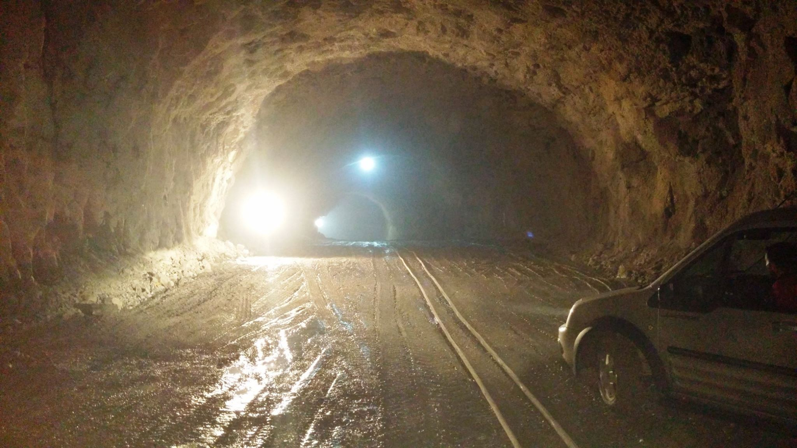

Stabilize malzeme (stabilize dolgu), belirli bir gradasyona (tane boyutu dağılımına) sahip kum, çakıl, kırmataş ve gerektiğinde bağlayıcı (çimento, kireç veya doğal kil) karışımının optimum su muhtevasında sıkıştırılmasıyla elde edilen yüksek taşıma gücüne sahip mühendislik dolgusudur. Yol inşaatlarında alttemel ve temel tabakası olarak, otopark altyapılarında, boru hendeklerinde ve zemin iyileştirme projelerinde kullanılır. Erzurum'un sert iklim koşullarında, donma-çözülmeye dayanıklı stabilize malzeme seçimi ve doğru uygulanması, yol ve altyapı projelerinin uzun ömürlü olması için hayati önem taşır.
Stabilize Malzemenin Temel Özellikleri
İyi bir stabilize malzeme aşağıdaki teknik özelliklere sahip olmalıdır:
- 📏 İyi Gradasyon (Tane Dağılımı): Farklı boyutlardaki tanelerin dengeli bir şekilde karışması, sıkıştırma sonrası boşluksuz ve yüksek yoğunluklu bir yapı oluşturur.
- 🧪 Düşük İnce Madde Oranı: 0.063 mm'den ince malzeme (kil, silt) oranı kontrollü olmalıdır. Aşırı ince madde su tutarak donma-çözülme hasarına yol açar.
- 🪨 Yüksek Taşıma Gücü (CBR Değeri): Stabilize malzemenin Kaliforniya Taşıma Oranı (CBR) en az %30-50 olmalıdır. Yol temel tabakasında bu değer %80-100'e kadar çıkabilir.
- 💧 İyi Drenaj: Suyu bünyesinde tutmayan, hızlı tahliye eden bir yapıda olmalıdır.
- ⚙️ Optimum Sıkışma: Uygun nemde ve uygun sıkıştırma ekipmanı ile sıkıştırıldığında maksimum kuru yoğunluğa ulaşabilmelidir.
Stabilize Malzeme Çeşitleri
Kullanım amacına ve bağlayıcı içeriğine göre stabilize malzemeler sınıflandırılır:
🧱 Mekanik Stabilize (Bağlayıcısız)
Herhangi bir kimyasal bağlayıcı (çimento, kireç) içermeyen, sadece uygun gradasyondaki kum, çakıl ve kırmataşın su ile sıkıştırılmasıyla elde edilen dolgudur. Yol alttemel tabakasında yaygın olarak kullanılır. Erzurum'da don etkisine karşı esneklik sağladığı için tercih edilir.
🧪 Kimyasal Stabilize (Bağlayıcılı)
Granüler malzemeye belirli oranda çimento, kireç veya uçucu kül gibi bağlayıcılar eklenerek elde edilen yüksek dayanımlı dolgudur. Yol temel tabakası, otopark altyapısı ve ağır yük taşıyan zeminlerde kullanılır. Bağlayıcılı stabilize, mekanik stabilizeye göre çok daha yüksek taşıma gücü sunar.
🏔️ Kırmataş Stabilize
Tamamen kırma taştan oluşan, köşeli tanelerin birbirine kenetlenmesiyle yüksek dayanım sağlayan stabilize türüdür. Demiryolu balastı, ağır trafik yolları ve endüstriyel sahalarda kullanılır.
Stabilize Malzemelerin Karşılaştırması
| Özellik | Mekanik Stabilize | Çimento Stabilize | Kırmataş Stabilize |
|---|---|---|---|
| Bağlayıcı | Yok (sadece su) | Çimento (%3-6) | Yok (kenetlenme) |
| Dayanım (CBR) | 30-50% | 100-150% | 80-120% |
| Kullanım Alanı | Yol alttemel | Yol temeli, otopark | Ağır trafik, demiryolu |
| Maliyet | Düşük | Orta-Yüksek | Orta |
| Erzurum'da Kullanım | Yaygın | Ana yollar, otopark | Sanayi bölgeleri |
Stabilize Malzemenin Kullanım Alanları
- 🛣️ Yol İnşaatı: Asfalt veya beton kaplama altında alttemel (subbase) ve temel (base) tabakası olarak kullanılır. Yükü yayarak zemine iletir, don etkisini azaltır.
- 🅿️ Otopark ve Saha Betonu Altyapısı: Beton kaplama altında düzgün ve taşıyıcı bir zemin oluşturur.
- 🏗️ Bina Temelleri: Radye temel altında zemin iyileştirme ve tesviye amacıyla kullanılır.
- 💧 Boru Hendekleri: Altyapı borularının (kanalizasyon, içme suyu) yataklanması ve üst dolgusunda kullanılır.
- 🚜 Zemin İyileştirme: Zayıf zeminlerin taşıma gücünü artırmak için kullanılır.
Erzurum'da Stabilize Malzeme Seçimi ve Uygulaması Neden Kritiktir?
Erzurum'un uzun ve sert kışları, sık donma-çözülme döngüleri ve yüksek rakımı, stabilize malzeme performansını doğrudan etkiler:
- ❄️ Donma-Çözülme Direnci: Stabilize malzeme içindeki ince taneler (kil, silt) su tutarak donduğunda hacimce genleşir. Bu durum yol yüzeyinde ondülasyon (dalgalanma), çatlaklar ve çukurlara neden olur. Erzurum'da kullanılacak stabilize malzemenin ince madde oranı %8'i geçmemelidir.
- 💧 Drenaj: Stabilize tabakanın suyu hızlıca tahliye edebilmesi gerekir. Aksi halde zemin donduğunda kabarmalar (frost heave) meydana gelir.
- 📏 Sıkıştırma: Soğuk havalarda sıkıştırma zorlaşır. Bu nedenle Erzurum'da stabilize serimi ve sıkıştırması, inşaat sezonu olan Mayıs-Eylül aylarında yapılmalıdır.
Stabilize Uygulamasında Dikkat Edilmesi Gerekenler
- ✅ Zemin Hazırlığı: Stabilize serilecek zemin bitkisel toprak, kök ve organik maddelerden arındırılmalı, tesviye edilmelidir.
- ✅ Tabaka Kalınlığı: Stabilize malzeme, bir defada en fazla 20-25 cm kalınlığında serilmeli ve her tabaka ayrı ayrı sıkıştırılmalıdır.
- ✅ Nem Kontrolü: Malzeme optimum su muhtevasında (±%2) olmalıdır. Gerektiğinde arazöz ile sulama yapılmalıdır.
- ✅ Sıkıştırma Ekipmanı: Titreşimli silindir veya kompaktör kullanılmalıdır. Sıkışma kontrolü (nükleer densimetre veya kum konisi) mutlaka yapılmalıdır.
- ✅ Koruma: Sıkıştırılmış stabilize yüzey, yağmur ve don etkisinden korunmalıdır.
📞 Erzurum'da Kaliteli Stabilize Malzeme ve Altyapı Hizmetleri
ME-KA İnşaat, yol, otopark ve temel altyapılarınız için gerekli tüm ebatlarda stabilize malzeme tedariği ve uygulaması yapmaktadır. Ücretsiz keşif ve fiyat teklifi alın.
✅ Kaliteli malzeme + doğru uygulama + uzun ömürlü altyapı
Sık Sorulan Sorular
Stabilize ile mıcır arasındaki fark nedir?
Mıcır tek boyutlu kırma taştır. Stabilize ise farklı boyutlarda kum, çakıl ve mıcırın karışımıdır. Stabilize sıkıştırıldığında boşluksuz bir yapı oluşturur, mıcır boşluklu kalır.
1 kamyon stabilize kaç m² yer yapar?
20 cm kalınlık için 1 kamyon (yaklaşık 18-20 ton) stabilize malzeme yaklaşık 45-50 m² alan kaplar.
Stabilize malzeme fiyatları nasıl belirlenir?
Malzemenin cinsi (mekanik/çimento stabilize), nakliye mesafesi ve sipariş miktarına göre fiyat değişir.
Erzurum'da stabilize ne zaman serilir?
İdeal dönem Mayıs-Eylül arasıdır. Kış aylarında zemin donlu olduğu için stabilize serimi önerilmez.